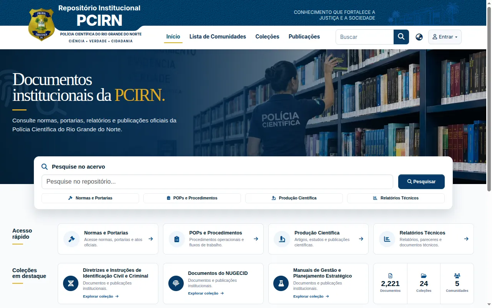
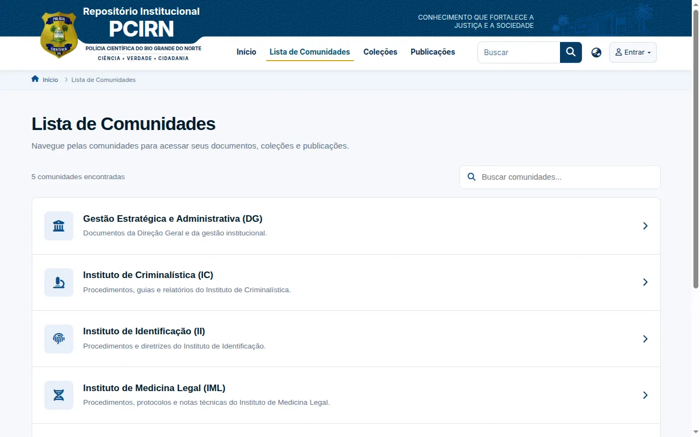
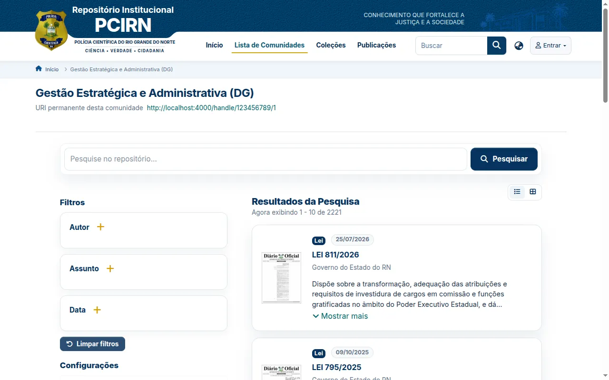
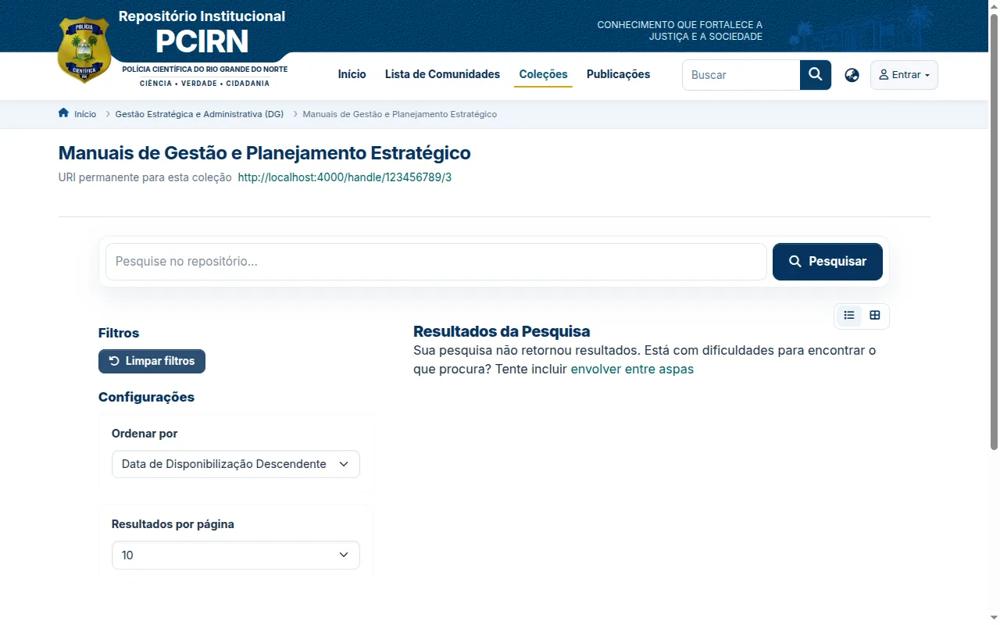
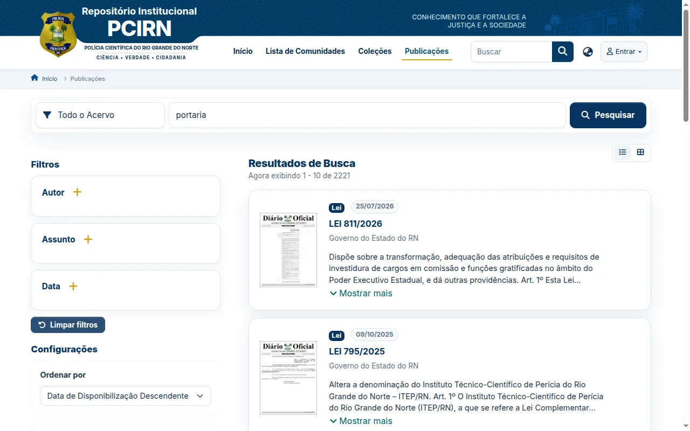

Repositório Institucional da Polícia Científica do RN
Memória, documentos e produção científica do Instituto em um acervo digital de acesso aberto, construído em DSpace.
O que o repositório reúne
- Portarias, leis e demais atos normativos da Polícia Científica do RN.
- Notas técnicas, relatórios, manuais e procedimentos operacionais.
- Publicações institucionais, como o livro Do Vestígio à Prova.
- Documentos e fotografias do acervo de memória institucional.
- Produção técnica e científica da perícia oficial.
Cada documento recebe metadados padronizados (Dublin Core) e identificador persistente (handle), o que garante busca precisa, citação estável e preservação digital de longo prazo.
O material é organizado em comunidades e coleções, com metadados padronizados que facilitam a busca e a citação.





Comunidades estruturadas
O acervo é organizado em cinco comunidades, espelhando a estrutura do órgão:
- Gestão Estratégica e Administrativa (DG) — documentos da Direção Geral e da gestão institucional.
- Instituto de Criminalística (IC) — procedimentos, guias e relatórios.
- Instituto de Identificação (II) — procedimentos e diretrizes.
- Instituto de Medicina Legal (IML) — procedimentos, protocolos e notas técnicas.
- NUGECID — memória institucional, publicações e acervo do Núcleo.
Dentro das comunidades, as coleções reúnem tipos específicos de documento, como portarias, notas técnicas, relatórios e manuais.
Como depositar
- O setor encaminha o documento ou acervo ao NUGECID.
- A equipe avalia o material e define a comunidade e a coleção de destino.
- Os metadados são descritos conforme o padrão Dublin Core.
- O documento é depositado e recebe um identificador persistente (handle).
- O item fica disponível para consulta pública no repositório.
O repositório está em processo de implantação. O endereço de acesso será publicado aqui assim que o portal entrar no ar.
Acessar repositório — em breve